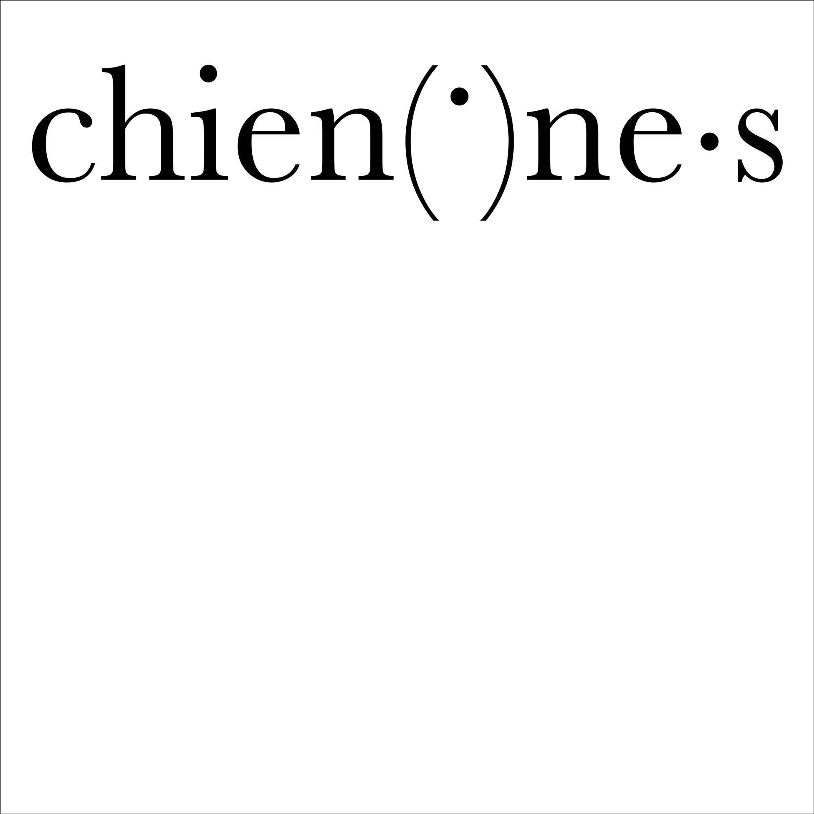
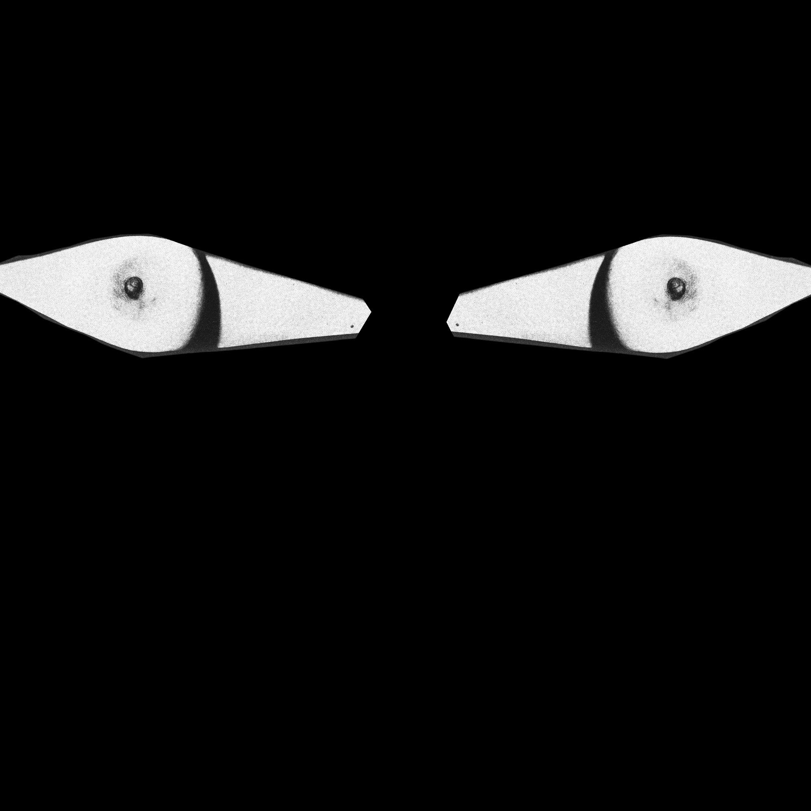
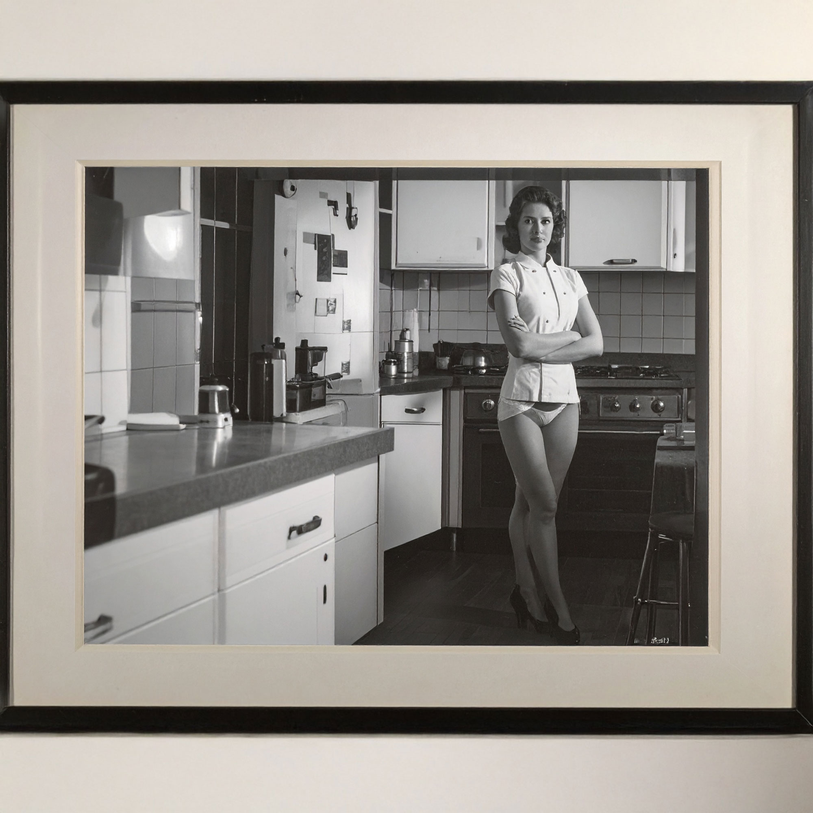
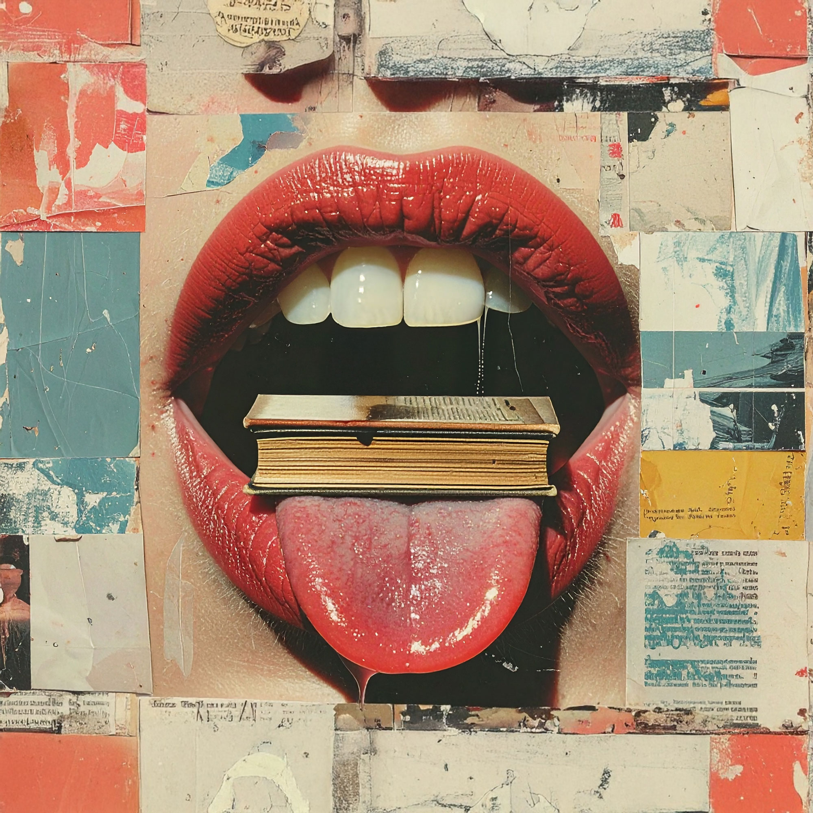

LANGUE
DE M*LIÈRE
LANGUE
DE M*LIÈRE




Conception de quatre couvertures de pochettes vinyles du single C'est une pute de Fatal Bazooka.
Deux pochettes ont dû être réalisées à la main ou avec des logiciels, les deux autres avec un outil d'Intelligence Artificielle.
Les quatre pochettes ouvrent des réflexions sur la banalisation d'un sexisme pérenne et la manière dont le langage et ses outils participent à la sexualisation constante de la femme :
– Point de tension souligne la manière dont les nouveaux dispositifs linguistiques mis en place dans une logique d'inclusion, n'empêchent pas la sexualisation dès lors qu'un passage au féminin s'opère. Bien au contraire, ici le point médian devient l'arme même du crime ;
– Point de fuite explore le deuxième organe sexualisant après la langue : les yeux. Tapies dans l’ombre, ces machines à sexualiser nous épient, nous fixent inlassablement et dénudent ;
– circa représentant la constante sexualisation des femmes, toutes époques confondues, est une photographie fabriquée par IA conçue comme un travail d’archive.Le titre amputé de sa date questionne sur la temporalité du sexisme : Depuis quand ? Jusqu’à quand ? ;
– Abus de langage, générée par IA, évoquant la manière dont la langue, au sens propre comme figuré, est manipulée à des fins sexistes, un manuscrit posé sur la langue comme symbole des archaïsmes sexistes dont nous héritons.
Pochettes 315 x 315 mm
Projet ÉSAD